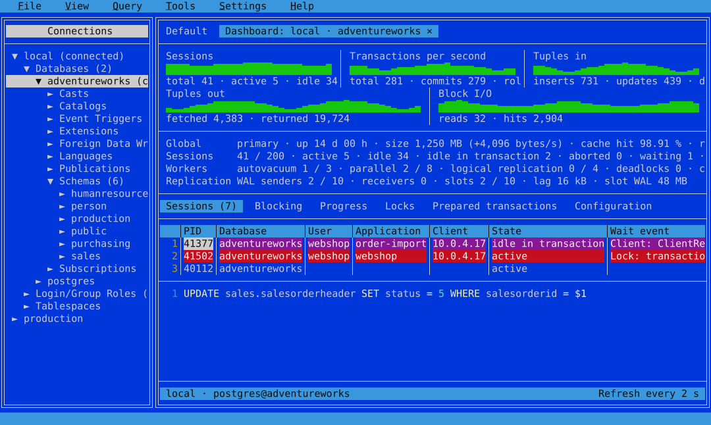
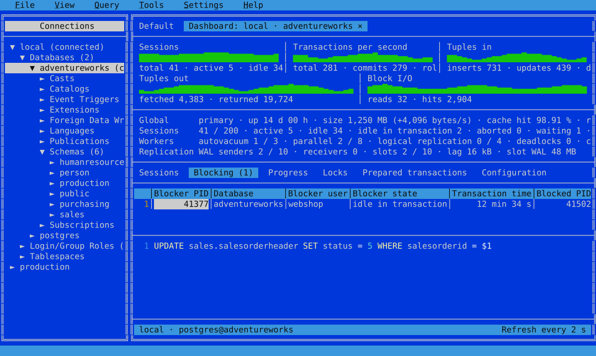
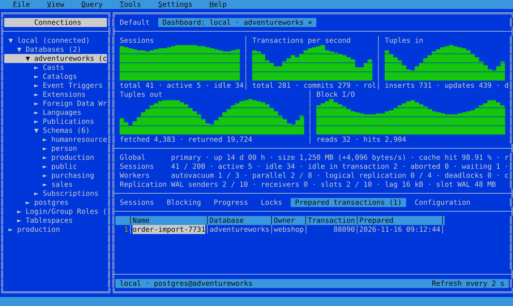
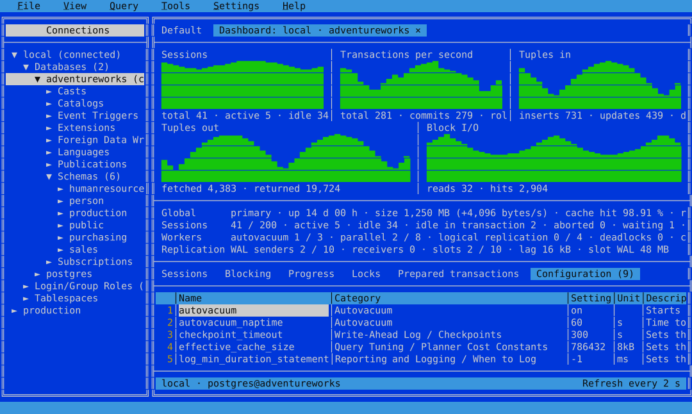
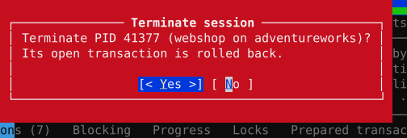
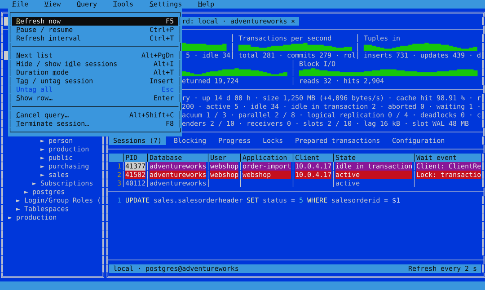

Server dashboard
A periodic sample of the cumulative statistics system: rates from pg_stat_database, the
backends in pg_stat_activity, lock waits (pg_blocking_pids()), the
pg_stat_progress_* views, pg_locks, prepared transactions and pg_settings —
with pg_cancel_backend() and pg_terminate_backend() on a key.

adventureworks: graphs at the top, the summary in the middle,
the Sessions list below.Opening the dashboard
Put the tree cursor on a row of a connected server and press Alt+D (also Ctrl+D) — or choose , or in the context menu (F2).
| Cursor is on… | The dashboard shows | Tab name |
|---|---|---|
| the server row (or Databases, a role, a tablespace) | The whole cluster: all databases summed. Its session is on the maintenance database. | Dashboard: local |
| a database, or anything inside it | That database only: every query is filtered by datname. Its session is on that database. | Dashboard: local · adventureworks |
- The dashboard is a tab. It stays open beside your query tabs and keeps refreshing while you work elsewhere. Close it like any tab: Ctrl+W.
- Opening it again for the same server and database switches to the tab that is already open. You can have a server-wide dashboard and dashboards of single databases at the same time.
- It holds its own session. Its queries exclude
pg_backend_pid(), so the dashboard's backend is in none of its session counts and lists. - If its session is lost, the tab says so; F5 connects again.
Cost on a busy production server. A refresh is two queries: one row of counters, and
the list that is shown — the other five lists are not read. They read shared-memory views
(pg_stat_activity, pg_stat_database, pg_stat_replication,
pg_replication_slots, pg_locks, pg_stat_progress_*) and scan no user table.
Two values touch the file system: pg_database_size(), called at most every 30 seconds, and the
temporary-file count, a directory listing with pg_ls_tmpdir().
What you may see
pg_stat_activity shows the details of other roles' backends (query, state,
wait events, timestamps) only to superusers and members of pg_read_all_stats (which
pg_monitor includes). Any other role sees one row per backend, with the details only of its own
sessions. A few summary values need those privileges too and show - without them.
Refreshing
The dashboard samples every 2 seconds. The right end of the tab status row shows the rhythm: Refresh every 2 s.
| Key | What it does |
|---|---|
| F5 | Refresh now. |
| Ctrl+P | Pause — the screen freezes so you can read it — and resume. |
| Ctrl+T | Next refresh interval: 0.5 → 1 → 2 → 5 → 10 → 30 seconds, and round again. |
The timer for the next refresh starts only when the previous one has been answered, so requests never pile up on a slow server. During a refresh the cursor of the list stays on the same PID, even when the rows change their order.
The graphs
Five boxes, each with a title, a small graph of the last readings (the newest at the right) and the current numbers.
| Box | Numbers | What it tells you |
|---|---|---|
| Sessions | total · active · idle | Rows of pg_stat_activity with backend_type = 'client backend', by state. |
| Transactions per second | total · commits · rollbacks | xact_commit, xact_rollback. Many rollbacks usually mean an application that fails and retries. |
| Tuples in | inserts · updates · deletes per second | tup_inserted, tup_updated, tup_deleted. |
| Tuples out | fetched · returned per second | tup_fetched, tup_returned. Returned far above fetched points to sequential scans whose rows are filtered out. |
| Block I/O | reads · hits per second | blks_hit: found in shared_buffers; blks_read: requested from the operating system (page cache or disk). |
The rates are the difference of two samples of the pg_stat_database counters (summed over all
databases on a cluster dashboard), divided by the difference of the server's clock_timestamp(). On a wide window the five boxes are in one row, otherwise in two. On a
low window the graphs are the first thing to go, to leave room for the list.
The summary
Four lines between the graphs and the lists.
| Line | Value | Meaning |
|---|---|---|
| Global | primary / standby | pg_is_in_recovery(). |
| up 14 d 00 h | Time since pg_postmaster_start_time(). | |
| size 1,250 MB (+4,096 bytes/s) | Sum of pg_database_size() over the databases shown, and its growth between two readings. Databases your role has no CONNECT privilege on are skipped. Read at most every 30 seconds (and on F5): the function stats every file of the database. | |
| cache hit 98.91 % | blks_hit / (blks_hit + blks_read) between the last two samples — the current ratio, not the one since stats_reset. | |
| rollback ratio | xact_rollback as a share of all transactions. | |
| temporary files | Number and total size of the files in the temporary directories of all tablespaces right now (pg_ls_tmpdir()): sorts and hashes that exceeded work_mem. PostgreSQL 12+; needs EXECUTE on pg_ls_tmpdir() (superuser, pg_monitor). | |
| Sessions | 41 / 200 | Client backends out of max_connections. |
| active, idle | state active / idle. | |
| idle in transaction, aborted | state idle in transaction / idle in transaction (aborted). Such a backend keeps its locks, and its snapshot can hold back the xmin horizon. A few, briefly, is normal; one that stays for minutes is a problem. | |
| waiting | Client backends with wait_event_type = 'Lock'. Look at Blocking. | |
| oldest transaction, longest query | Time since the smallest xact_start, and since the smallest query_start of an active backend. WAL senders are left out. | |
| oldest xmin and its PID | The largest age(backend_xmin) and the PID that has it: the backend whose snapshot keeps VACUUM from removing dead tuples. | |
| Workers | autovacuum 1 / 3, parallel 2 / 8, logical replication 0 / 4 | Backends by backend_type, out of autovacuum_max_workers, max_parallel_workers and max_logical_replication_workers. |
| deadlocks, conflicts, checksum failures | Increase of deadlocks, conflicts and checksum_failures (PostgreSQL 12+) in pg_stat_database since the previous refresh. A value above 0 is shown in the warning colour. | |
| Replication | WAL senders 2 / 10, receivers, slots 2 / 10 | Rows of pg_stat_replication out of max_wal_senders, rows of pg_stat_wal_receiver, rows of pg_replication_slots out of max_replication_slots. |
| lag 16 kB | The largest pg_wal_lsn_diff(pg_current_wal_lsn(), replay_lsn) in pg_stat_replication: replay lag of the slowest standby, in bytes of WAL. On a primary only; needs monitoring privileges. | |
| slot WAL 48 MB | The largest distance from a slot's restart_lsn to the current WAL position (the replay position on a standby): the most WAL one slot retains. An inactive slot makes this grow until pg_wal fills the disk. |
On a database dashboard the Sessions line and the pg_stat_database values are those of that
database; workers, replication and temporary files are always cluster-wide.
The lists
Below the summary is a bar with six lists: Sessions · Blocking · Progress · Locks · Prepared transactions · Configuration. The one shown is highlighted and has its number of rows.
| Key | What it does |
|---|---|
| Alt+Right / Alt+Left | Next / previous list. Also Ctrl+PgDn / Ctrl+PgUp and Alt+PgDn / Alt+PgUp. |
| Arrows, PgUp / PgDn, Home / End | Move in the list; it scrolls sideways — the lists are wide. |
| Enter | Shows the whole row in a window — every column, the full query text. |
| Ctrl+C | Copies the cell. Ctrl+A, then Ctrl+C: the whole list. |
| F2 | The context menu with all dashboard commands. |
The lists are the same grid as query results: see The grid.
Sessions
One row per row of pg_stat_activity: client backends and the server's auxiliary processes.
| Column | Meaning |
|---|---|
| PID | pid of the backend process — the argument of cancel and terminate. |
| Database, User, Application, Client | datname, usename, application_name, client_addr. |
| State | state: active — executing a statement; idle — waiting for a client command; idle in transaction — in a transaction block, waiting for a client command; idle in transaction (aborted) — the same, in a failed transaction. |
| Wait event | wait_event_type: wait_event, for example Lock: transactionid, IO: DataFileRead, Client: ClientRead. |
| Blocked by | pg_blocking_pids(pid), computed only for backends with wait_event_type = 'Lock'. |
| Duration | How long — see below. |
| Xmin age | age(backend_xmin). A large value: this backend's snapshot holds back the xmin horizon, so VACUUM cannot remove newer dead tuples. |
| Transaction ID | backend_xid. Assigned at the transaction's first write; empty for a transaction that has only read so far. |
| Leader PID | leader_pid of a parallel worker (PostgreSQL 13+). Workers are listed right after their leader. |
| Query ID | query_id (PostgreSQL 14+): the same identifier as queryid in pg_stat_statements. Empty unless the server computes query identifiers (compute_query_id). |
| Backend start, Transaction start, Query start | backend_start, xact_start, query_start. |
| Backend type | backend_type: client backend, autovacuum worker, walsender, checkpointer, … |
| Query | query: the running statement — or, for a backend that is not active, the last one it ran. The server truncates it at track_activity_query_size bytes. |
Row colours
| Colour (theme role) | The session… |
|---|---|
dashboard.idle_in_transaction | is idle in transaction. |
dashboard.blocking | holds a lock that others are waiting for. |
dashboard.blocked | is waiting for a lock. |
dashboard.slow / dashboard.very_slow (the Duration cell) | has been running for 1 second or more / 10 seconds or more. |
dashboard.tagged | is tagged by you. |
In the picture at the top, the first row is the blocker: idle in transaction for over twelve minutes,
and the second row — an UPDATE of the same table — is waiting for its lock (Lock: transactionid; the
column Blocked by, further right, names PID 41377).
Duration and order
Alt+T changes what the Duration column measures; the column title names it:
| Mode | Measures | Use it to find |
|---|---|---|
| Query (default) | Time since query_start; empty for idle backends. | Slow queries. |
| Transaction | Time since xact_start. | Long-running transactions. |
| Backend | Time since backend_start. | Old connections. |
The sessions are sorted by this duration, longest first — the interesting ones are at the top.
Alt+I hides the backends in state idle (and shows them again): behind a connection pool with hundreds of idle backends, what is left is the actual activity.
The statement pane

Below the Sessions, Blocking and Progress lists is a pane with the whole statement of the row under the cursor. It is a read-only SQL view: you can scroll, select, copy and search in it.
| Key | What it does |
|---|---|
| Ctrl+R | Hides the pane — more rows for the list — or shows it. |
| Alt+Down / Alt+Up | Into the pane / back to the list. |
| Alt+Shift+Up / Alt+Shift+Down | Pane smaller / larger; or drag its upper line with the mouse. |
| Ctrl+E | Opens the statement in a new query tab connected to the backend's database — to run it yourself, or to prefix it with EXPLAIN. |
The whole row

Blocking

One row per pair (blocker, blocked): every backend with wait_event_type = 'Lock', joined to each
PID in its pg_blocking_pids().
| Columns | Meaning |
|---|---|
| Blocker PID, Database, Blocker user, Blocker state, Transaction time | The backend pg_blocking_pids() names, and the time since its xact_start. |
| Blocked PID, Blocked user | The waiting backend. |
| Lock type, Mode, Relation | locktype, mode and relation of the waiting backend's ungranted row in pg_locks. |
| Waiting for | Time since the blocked statement's query_start. The longest is at the top. |
| Blocker query, Blocked query | query of each. |
The typical case is the one in the picture: the blocker is idle in transaction — it updated a row and has
not committed. pg_cancel_backend() does not help there, because the blocker executes nothing; the fix is
to commit or roll back in that application, or to terminate the blocker's session. Cancel and
terminate in this list act on the blocker.
Progress

CREATE INDEX CONCURRENTLY at work.The union of the pg_stat_progress_* views the server version has, joined to
pg_stat_activity for role, start time and query:
| Command | View | Since PostgreSQL |
|---|---|---|
VACUUM, including autovacuum | pg_stat_progress_vacuum | 11 |
CLUSTER, VACUUM FULL | pg_stat_progress_cluster | 12 |
CREATE INDEX, REINDEX | pg_stat_progress_create_index | 12 |
ANALYZE | pg_stat_progress_analyze | 13 |
| Base backups | pg_stat_progress_basebackup (cluster dashboard only) | 13 |
COPY | pg_stat_progress_copy | 14 |
Columns: PID, database, user, command, relation, phase (the view's phase),
Done % and Done (1,240 / 3,105 blocks — heap, index or sample blocks; bytes for COPY and
backups; the percentage is empty when the total is not known), Running for (since query_start),
and the query. The longest-running is at the top. The percentage is
that of the current phase — a command with several phases starts again from 0.
Locks

The rows of pg_locks, except the dashboard's own: pid, locktype and the lock
target (database, relation, page, tuple, virtualxid,
transactionid, classid / objid / objsubid),
virtualtransaction, mode, Granted — no means the backend is still waiting for
it — and fastpath. For “who blocks whom”, Blocking is easier; this list is for the details.
Prepared transactions

The rows of pg_prepared_xacts: transactions prepared for two-phase commit (PREPARE
TRANSACTION) and not yet resolved with COMMIT PREPARED / ROLLBACK PREPARED:
gid, database, owner, transaction ID, prepare time. An orphaned one keeps its locks and holds back the
xmin horizon indefinitely — the list should be empty unless an application or a transaction manager uses two-phase
commit.
Configuration

pg_settings: name, category, setting, unit,
short_desc — the value in the setting's base unit (shared_buffers 262144 in units of
8kB). For the same settings with their source and file,
select the server row in the tree.
Cancelling a query, terminating a session
In the Sessions, Blocking and Progress lists you can act on the row under the cursor:
| Key | Command | What it does | Use it when |
|---|---|---|---|
| Alt+Shift+C | Cancel query | pg_cancel_backend(pid). The backend's current statement fails with SQLSTATE 57014 (query_canceled); the session stays connected, and a transaction block is left aborted until the client rolls back. | A query runs too long or was started by mistake. |
| F8 | Terminate session | pg_terminate_backend(pid). The backend rolls back its transaction and exits; the client loses its connection. | A session is idle in a transaction and blocks others, or does not react to cancel. |

- The signal is sent only if
pg_stat_activitystill has that PID with thebackend_startthe list showed — so a backend that has exited, and whose PID another one has by now, is not hit. - The result is shown in the status line; if the server refuses — a role may signal only its own backends unless
it is a superuser or a member of
pg_signal_backend— you see its error. - Terminating an autovacuum worker is harmless (the launcher starts another later); terminating a walsender interrupts replication until the standby reconnects. Read the Backend type first.
Several sessions at once: tagging

As with files in Midnight Commander:
- In Sessions, press Insert on a session: it is tagged (shown in the tag colour) and the cursor moves down. Insert on a tagged session removes the tag.
- Tag all the sessions you mean.
- Press Alt+Shift+C or F8. The command now acts on all tagged sessions, after one question that says how many.
Esc removes all tags. The tag of a backend that has exited disappears with it.
All dashboard keys

| Key | What it does |
|---|---|
| F5 | Refresh now; connect again after a lost connection. |
| Ctrl+P | Pause / resume. |
| Ctrl+T | Refresh interval. |
| Alt+Right / Alt+Left | Next / previous list. |
| Alt+I | Hide / show idle sessions. |
| Alt+T | Duration mode. |
| Insert / Esc | Tag the session / remove all tags. |
| Enter | Show the whole row. |
| Alt+Shift+C | Cancel query. |
| F8 | Terminate session. |
| Ctrl+R | Show / hide the statement pane. |
| Ctrl+E | The statement in a new query tab. |
| Ctrl+C | Copy. |